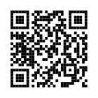

01
Hakkımda
1993 yılından bu yana Dokuz Eylül Üniversitesi Hastanesinde görev yapmaktayım.
Klinik Mühendisliği alanındaki teknik deneyimimin ardından 2026 yılında İş Sağlığı ve Güvenliği Biriminde görev almaya başladım.
Risk değerlendirmesi, güvenli çalışma kültürü, kök neden analizi ve sürekli iyileştirme yaklaşımı üzerine çalışmalarımı sürdürmekteyim.
02
Eğitim
- Endüstri Mühendisi
- Elektrik Teknikeri
- Elektronik Teknisyeni
03
Çalışma Alanları
İş Sağlığı ve Güvenliği
Risk Değerlendirmesi
İş Kazaları
Kök Neden Analizi
İSG Eğitimleri
Kurul ve Komisyonlar
04
Teknik İlgi Alanları
3D Tasarım
3D Baskı
Maker Projeleri
Dijital Üretim
05
Kariyer
1993
Dokuz Eylül Üniversitesi Hastanesi
Göreve başlangıç.
1993–2026
Klinik Mühendisliği
Tıbbi cihaz yönetimi, teknik altyapı ve bakım süreçleri.
2026–
İş Sağlığı ve Güvenliği Birimi
İş sağlığı ve güvenliği faaliyetleri, risk değerlendirmesi ve eğitimler.
06
İletişim
E-posta
halil.akin@deu.edu.tr
LinkedIn
Profili Görüntüle
Telefon
Butonlar üzerinden ulaşabilirsiniz.
07
Dijital Kartvizit

Tek Dokunuşla Erişim
QR kodu okutarak kişisel web siteme ulaşabilir, iletişim bilgilerime erişebilir ve dijital kartvizitimi görüntüleyebilirsiniz.
Rehbere Kaydet (.vcf)
08
Uzmanlık Alanları
33+
Yıllık Kurumsal Deneyim
İSG
İş Sağlığı ve Güvenliği
3D
Dijital Tasarım
Maker
Üretim Teknolojileri